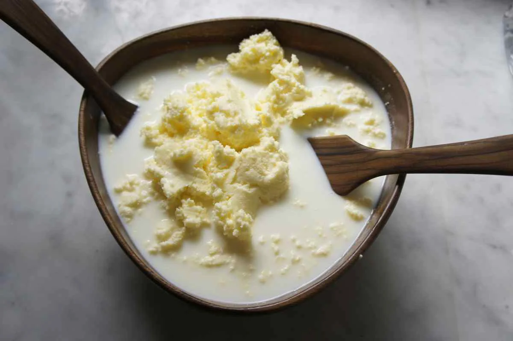

Butter
Description

Homemade butter is always tastier, healthier and has better texture than storebought. If you make it with locally farmed sour cream it' even better!
I also recommend mixing the butter with chopped herbs (you can use fresh but if you want to store it for longer periods, use dehydrated), peppers, fruits, honey... You can try any combination!
Ingredients
- Cold water with ice
- Sour cream
- Spices, herbs, etc
Steps
- Put the sour cream in the bowl and just start mixing it until it starts separating.
- When you get 2 different parts (butter and buttermilk) scoop the butter, shape it and put it in ice water for a while.
- After 5 min take the butter, mix it with wanted herbs etc. and put it in a container.
- After 5 min take the butter, mix it with wanted herbs etc. and put it in a container.